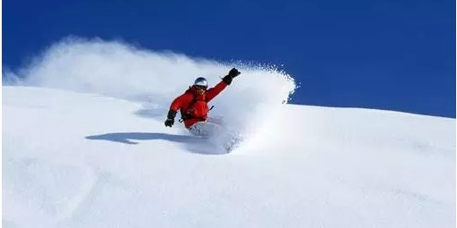

What should I pay attention to when swimming?
Author: Shihui Zhou Published date:Oct 10st, 2020
There are many precautions for swimming. Stretching and warm-up activities before swimming should be done to fully stretch the muscles and joints, so as to prevent leg cramps caused by too low water temperature after swimming. If you do not do enough warm-up activities, you may not get used to the water temperature, which may lead to excessive excitement of muscles and lead to convulsions.Before swimming, eat food, but do not eat too full, swimming is a relatively large energy consumption of human body, swimming on an empty stomach, will cause hypoglycemia may cause syncope.In the later stage of eating to be fully active, the water temperature after entering the water is not too cool, it is best to be close to the temperature of the human body, in the process of swimming, the amount of exercise to be controlled in the range.Too much exercise isn't good for exercise either.
Swimming equipment
- Swimsuit
- goggles
- Nose clips
- earplugs
- swimming caps
What should I pay attention to when I go skiing
Author: Shihui Zhou Published date:Oct 10st, 2020

Prevent into the snow
It is hard to avoid falling when skiing, if there is no special ski suit, the snow will fall from the ankle, wrist, collar and other places into the clothes, to use a long elastic tube gauntlet, one head on the upper half of the ski boots, the other head on the leg, can effectively prevent the ankle into the snow;Tie the wrist of ski gloves tightly with a wide elastic band with nylon fastener, which can effectively prevent snow from entering the wrist;Fill the space between the collar and neck with a scarf to keep the snow out of the neckline and to keep it warm.
Protection of the skin
Winter cold dry, add ski formed when the relative speed a lot of cold air stimulation to the skin and snow surface strong ultraviolet burns to the skin, is the main cause of skin damage, so can choose some oily, prevent moisture loss function is to protect skin to taste, then better with effect of uv protection, sunscreen on the skin with water resistance.If you feel that the cold wind stimulates your face too much, you can choose a headgear that only shows your eyes and add a full closure ski goggles to completely cover your face, which can effectively prevent the cold wind from damaging your face.